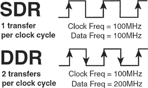
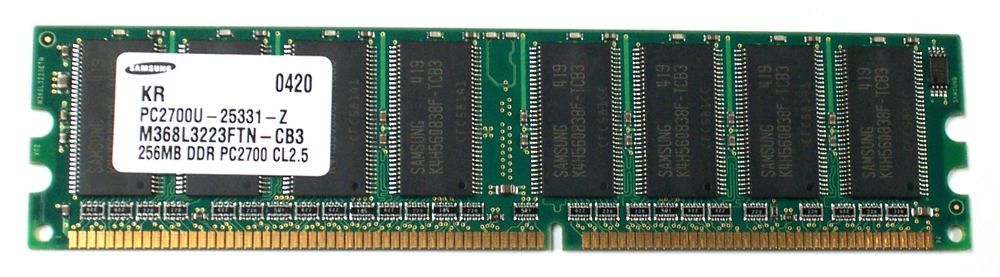

Bij DDR SDRAM wordt, zoals je ook op de tekening duidelijk kan zien, ook de neergaande flank (falling edge) gebruikt om bits te versturen. Hierdoor kan de snelheid waarmee bits worden verstuurd, zonder de kloksnelheid te verhogen, worden verdubbeld.

Vandaar ook de naam: double data rate. Vanaf hier wordt een prefetch buffer met diepte twee gebruikt. Er wordt dan een cel uitgelezen op de stijgende flank en een aanliggende cel uitgelezen op de dalende flank.
Zoals je merkt ziet DDR geheugen er vrij gelijkaardig uit aan SDR geheugen. Enkel de inkeping, onderaan, staat anders. Dit zorgt ervoor dat je geen DDR geheugen in een SDR geheugenslot kan stoppen en omgekeerd. Dit zal voor alle geheugens (DDR2, DDR3 en DDR4, DDR5) die nog volgen ook het geval zijn.

Ook hier kan je twee dingen afleiden: de datatransferrate is 2700MB/s (PC2700) en de capaciteit is 256 MB. De aandachtige lezer zal gemerkt hebben dat het niet meer de kloksnelheid is, uitgedrukt in MHz, die geafficheerd wordt maar wel de transfersnelheid, uitgedrukt in MB/s.